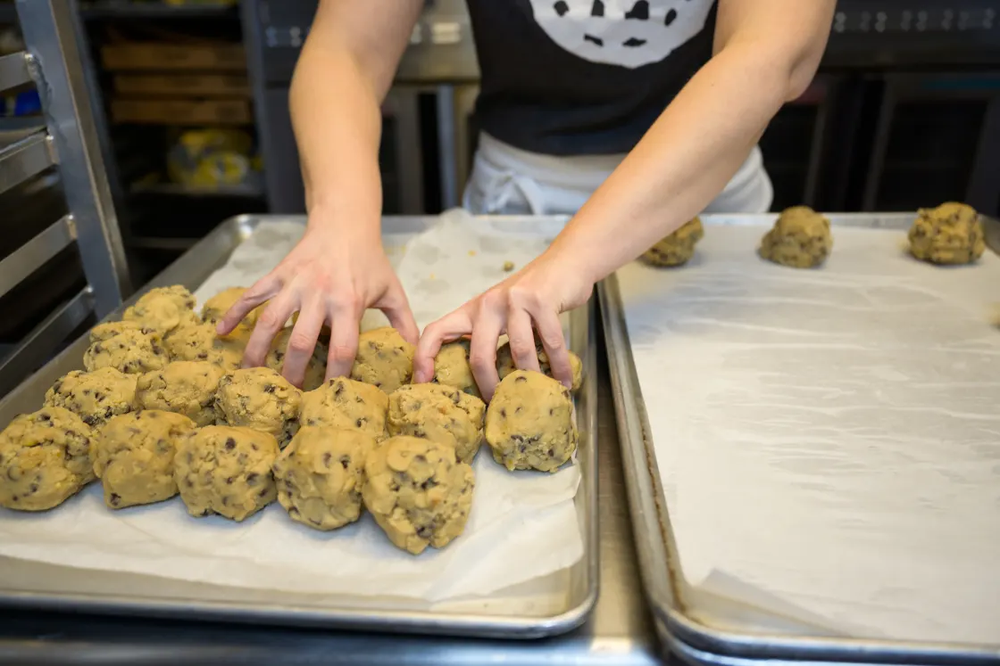

Grace Baker
Baker Job Description: Top Duties and Qualifications. A Baker, or Pastry Chef, is in charge of preparing baked goods for sale to customers.
traits
- Knead, roll, cut, and shape dough.
- Prepare and fill pans, molds, or baking sheets.
- Set oven temperatures and place items into ovens.

link to index